7．收敛与发散问题
今天，我们知道，18世纪在级数方面的工作大都是形式的，收敛与发散的问题无疑是不太认真对待的。然而，也不能说它完全被忽视了。
牛顿(37)、莱布尼茨、欧拉，甚至拉格朗日都把级数看作多项式的代数的推广。他们大概没有认识到，由于把求和推广到无穷多项，他们已经引进了新的问题。因此，他们完全不准备正视无穷级数强加给他们的问题；可是，工作中产生的明显困难使他们至少偶然地又提出这些问题。最有兴趣的问题是，如何正确地解决悖论，以及那些经常被提到而又经常被忽视的其他困难。
甚至某些17世纪的人就已经观察到了收敛同发散的区别。1668年，布龙克尔（William Brouncker）勋爵在研究
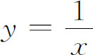
下的面积和logx两者之间的关系时，用与几何级数作比较的方法，证明了log 2和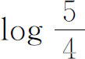
的级数的收敛性。牛顿和詹姆斯·格雷戈里大量应用级数的数值去计算对数表与其他函数表及积分值，他们已经知道级数的和可以是有穷，也可以是无穷。“收敛”与“发散”的名称，实际上是詹姆斯·格雷戈里于1668年就用过了，但他并没有发展这些概念。牛顿认识到必须考虑收敛性，但他仅仅断言幂级数至少同几何级数一样，对变量的一些小的值是收敛的。他还注明，有些级数对x的某些值可能是无穷，因而是无用的。莱布尼茨也多少意识到收敛性的重要。他在1713年10月25日给约翰·伯努利的信中提到（现在已是一定理）：如果一个级数的项，其符号交替变化，其绝对值单调趋向于零，那么这级数收敛(38)。
麦克劳林在他的《流数论》（1742）中，把级数用作求积分的标准方法。他说：“当一个流量不能真正地用代数项表示时，则它应可表示成一个收敛级数。”他还认为，收敛级数的项必须持续下降并小于任意指定的小量。“在这时，级数开头几项就几乎等于它整个的值了。”在《流数论》中，麦克劳林给出了（独立于柯西的发现）无穷级数收敛的积分判别法：
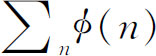
收敛，当且仅当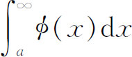
有穷，其中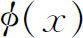
在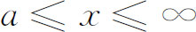
有穷并且是同号的。麦克劳林用几何形式给出了这个判别法。关于收敛性的某些思想，尼古拉·伯努利（1687—1759）在1712年和1713年给莱布尼茨的信中也曾表达过。在1713年4月7日的信(39)中，尼古拉·伯努利谈到级数
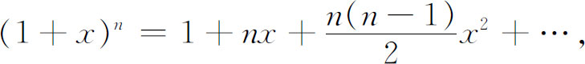
当x是负数且数值大于1，而n是一个分母为偶数的分数时，是没有和的。这就是说，级数的（算术的）发散性并不是级数没有和的唯一原因。例如，对x＞1，两个级数
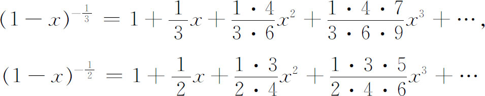
都是发散的，但第一个级数有一个可取的值，而第二个却有一个虚数值。人们不能通过对级数的检查来区别这两者，因为余项是丢掉了的。然而，尼古拉·伯努利并没有给出收敛性一个清楚的概念。在1713年6月28日的答复中，莱布尼茨(40)对收敛级数（和我们今天的意义大致一样）用了“收缩”（advergent）这个词，并同意说，非收缩的级数可以是没有值，也可以是无穷大。
无疑，欧拉看到了关于发散级数的某些困难，特别是在用它们进行计算时产生的困难，但他关于收敛与发散的概念仍然是不清楚的。他确实认识到，收敛级数的项必须变为无穷小。下面提到的一些通信将间接地告诉我们他的某些看法。
尼古拉·伯努利在1742年至1743年间，在和欧拉的通信中，曾经向欧拉的某些思想和工作挑战。他指出，欧拉在他1734年或1735年的文章（见第4节）中，用
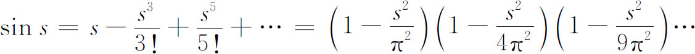
确实得到
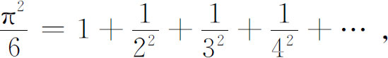
但是没有证明s的基本级数的收敛性。在1743年4月6日的一封信(41)中，他说，他不能想象，欧拉会相信一个发散级数竟能给出某些量或函数的精确值。他指出，余项是丢掉了的。例如，
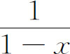
不能等于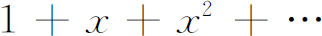
，因为余项，也就是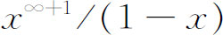
，是丢掉了的。在1743年的另一封信中，尼古拉·伯努利说，欧拉必须区别有限多项的和与无穷多项的和。在后一种情形下，是没有最后项的。因此，人们对无穷的多项式不能应用（像欧拉所做的）有限次多项式的根与系数的关系。对于一个有无穷多个项的多项式，人们不能说它的根的和。
欧拉对尼古拉·伯努利这些信是怎样回答的就不知道了。在1745年8月7日给哥德巴赫的信(42)中，欧拉引用了尼古拉·伯努利的推理，就是说，像
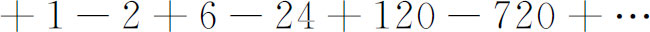
这样的发散级数是没有和的，但他说这些级数有一个确定的值。他注明，我们不应当用“和”这个名称，因为这是指真正的加法。他因此叙述了一个一般原理，这个原理说明所谓一个确定的值究竟指的是什么。他指出发散级数来自有限的代数表达式，因此他说，级数的值就是级数由之而来的代数表达式的值。在1754年或1755年的文章（见第4节）中，他补充说：“无论如何，一个无穷级数可作为某些有尽的表达式的展开而得到，在数学运算中它可以用作同那些表达式等价的东西，甚至对那些使级数发散的变量值也是如此。”在他1755年的《原理》中，他重述了前面的原理：
因此，让我们说，任何无穷级数的和是这样一个有限表达式，这级数是通过展开它而产生的。在这个意义下，无穷级数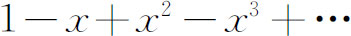
的和将是1/（1＋x），因为只要我们用数代到x的位置上去，这个级数就来自分式的展开。如果同意这一点，那么和这个词的新定义，当级数收敛时，同它原来所指是一致的；而就和这个词的本来意义说，发散级数没有和，因此，用这个词也不会产生什么不便。最后，借助于这个定义，我们能够保留发散级数的功用，并对所有反对意见给它们的用处作辩护(43)。
毫无疑义，欧拉意在把这原理限制在幂级数的范围之内。
欧拉在1743年写给尼古拉·伯努利的信中说，他过去对于发散级数的使用是十分怀疑的，但用他关于和的定义，却从来没有出过差错(44)。对于这一点，尼古拉·伯努利答复说，两个不同的函数的展开可能给出同一级数，如果真是这样，和就不是唯一的了(45)。为此，欧拉在给哥德巴赫的信（1745年8月7日）中写道：“尼古拉·伯努利提不出例子，我也不相信同样的级数能够来自两个完全不同的代数表达式。由此可毫无疑问地推出，任何级数，不管是收敛的还是发散的，都有一个确定的和或值。”
这场争论还有一个很有意思的余波。欧拉依据的是他自己的论点，就是像
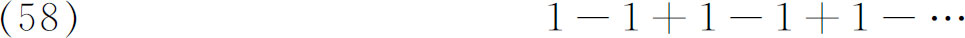
这样的级数的和，可以取级数所由之而来的那个函数的值。因为上面这个级数是从
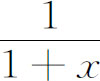
当x＝1时来的，所以有值1/2。然而卡莱［Jean-Charles（François）Callet，1744—1799］在一篇没有发表的致拉格朗日的便笺［拉格朗日赞成把它发表在巴黎科学院的《记要》（Mémoires）上，但还是没有发表出来］中，在将近40年以后指出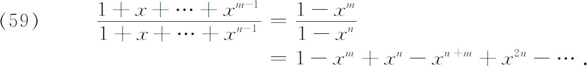
对x＝1（且m＜n），由于左边是m/n，故右边的和也必须是m/n，其中m和n可由我们自由选取。
拉格朗日(46)考虑了卡莱的不同意见后，认为它是不正确的。他用莱布尼茨的可能率论证说：假定m＝3和n＝5，那么（59）右边的完整的级数是
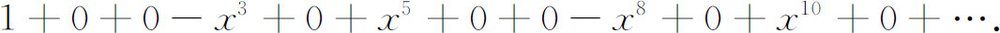
现在，如果对x＝1，取前一项、前两项、前三项……的和，那么每五个这样的部分和就有三个等于1，两个等于0。因此，最大可能的值（平均值）是3/5；而这是级数（59）当m＝3与n＝5时的值。顺便说明，泊松没有提到拉格朗日，而把拉格朗日的推理重作了一遍(47)。
欧拉说过，在求发散级数的和时，演算必须十分小心。他还给出了发散级数同半收敛级数的区别。半收敛级数就是像（58）这样的级数，把它加起来，当项数越来越多但又没有变成无穷时，它的值是摆动的。毫无疑问，他认识到了收敛级数和发散级数的区别。有一次（1747），当他用无穷级数去计算地球（作为一个扁球）对北极处一质点的吸引力时，他说，级数“激烈地”收敛。
拉格朗日也多少意识到收敛与发散的区别。在他早期的著作中，对这方面的确是不清楚的。他在一篇文章(48)中说，一个级数将表示一个数，如果它收敛到它的尽头，即如果它的第n项趋向于0的话。后来，将近18世纪末，当他研究泰勒级数时，他给出了我们今天所谓的泰勒定理(49)，这就是
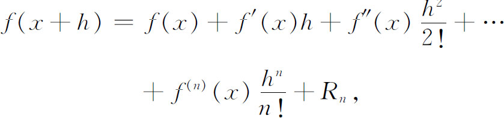
其中
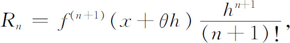
而θ的值在0与1之间。这个Rn的表达式就是有名的余项的拉格朗日形式。拉格朗日说，泰勒的（无穷的）级数，不考虑余项是一定不能用的。然而，他并没有研究收敛性的概念，或者余项的值与无穷级数收敛性的关系。他想，我们只需考虑级数的有限多项，使得所剩的余项很小就够了。收敛性后来由柯西加以研究。他强调泰勒定理是首要的，并且强调这样的事实：为了得到收敛的级数展开，余项必须趋向于0。
达朗贝尔也区别过收敛与发散的级数。在《百科全书》“级数”那一条中，他说：“当级数越来越趋向某有限量，从而级数的项（即组成级数的量）继续减小，就称它为收敛级数，而如果继续到无穷，它最后就变成等于这有限量。例如
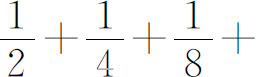
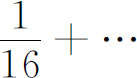
组成一个级数，它一直趋向于1，而当级数继续到无穷时，它最后变成等于1。”在1768年，达朗贝尔对使用不收敛的级数表示了怀疑，他说：“至于说到我，我承认，所有基于不收敛级数的推理，在我看来，都是十分可疑的，即使它的结果能用其他方法表明是真的，也是这样。”(50)鉴于约翰·伯努利和欧拉对级数的有效运用，像达朗贝尔这样的怀疑，在18世纪并没有受到注意。达朗贝尔在同一册书中给出级数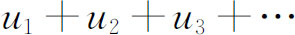
绝对收敛的一个检验法，这就是，如果对所有大于固定数r的n，有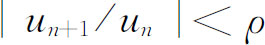
，其中ρ和n无关且小于1，则级数绝对收敛(51)。华林（Edward Waring，1734—1798），剑桥大学的卢卡斯数学教授，在级数方面有过先进的观点。他讲过，级数
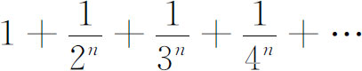
当n＞1时收敛，当n＜1时发散。他还给出（1776）一个有名的关于级数收敛与发散的判别法，即现在认为是属于柯西的比值判别法：取级数的第n＋1项与第n项作比，如果当n→∞时它的极限小于1，则级数收敛；如果极限大于1，则级数发散；当极限是1时得不到任何结论。
虽然拉克鲁瓦在他的有影响的《微积分学教程》的1797年版中，关于级数说了许多荒谬的话，但在第二版中，他却小心得多了。在谈到
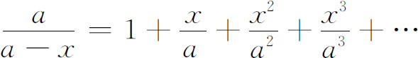
时，他说，我们一定要把级数说成是函数的一个发展，因为级数并不永远取它所属的函数的值(52)。他说，级数仅仅对于
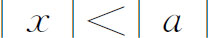
才给出函数的值。他保留了欧拉曾经表示过的一个思想，即无穷级数还是对所有的x与函数联系起来的；在涉及级数的任何解析研究中，我们应正确地认为，我们是在处理函数。因此，如果我们发现了级数的某些性质，那么我们可以相信，这些性质对函数也成立。为了理解这个断言的正确性，只需注意到，许多级数都满足刻画函数特征的方程。例如，对y＝a/（a-x），我们有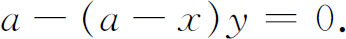
但如果谁在这最后的方程中用级数来代替y，他就会看到，级数也是满足这方程的。拉克鲁瓦接下去说，人们知道，对于任何其他的例子，结果都是一样的．他还指出了大量的在今天教材中仍然保留着的例子。
平心而论，18世纪无穷级数方面的工作中，形式的观点是占统治地位的。总的说来，数学家甚至憎恨任何限制，例如憎恨有必要去考虑一下收敛性的问题。他们的工作产生了很有用的结果，而他们也就满足于得到实用上的支持。他们确已超越了他们所能给出正确理由的界限，但他们在运用发散级数时至少还是小心的。我们将要看到，坚持只能使用收敛级数的主张，是经历大半个19世纪才取得成功的。但是，18世纪的人们最后还是得到了谅解；他们预见到的关于无穷级数的两个很有生命力的思想，后来得到了承认。第一个是发散级数可以用来给函数作数值逼近；第二个是级数可以在解析运算中代表函数，即使这个级数是发散的也行。
参考书目
Bernoulli，James：Ars Conjectandi，1713，reprinted by Culture et Civilisation，1968．
Bernoulli，James：Opera，2 vols．，1744，reprinted by Birkhaüser，1968．
Bernoulli，John：Opera Omnia，4 vols．，1742，reprinted by Georg Olms，1968．
Burkhardt，H．：“Trigonometrische Reihen und Integrale bis etwa 1850，”Encyk．der math．Wiss．，B．G．Teubner，1914-1915，2，Part 1，pp．825-1354．
Burkhardt，H．：“Entwicklungen nach oscillirenden Funktionen，”Jahres．der Deut．Math．-Verein．，Vol．10，1908，pp．1-1804．
Burkhardt，H．：“Über den Gebrauch divergenter Reihen in der Zeit 1750-1860，”Math．Ann．，70，1911，189-206．
Cantor，Moritz：Vorlesungen über Geschichte der Mathematik，B．G．Teubner，1898，Vol．3，Chaps．85，86，97，109，110．
Dehn，M．，and E．D．Hellinger：“Certain Mathematical Achievements of James Gregory，”Amer．Math．Monthly，50，1943，149-163．
Euler，Leonhard：Opera Omnia，（1），Vols．10，14，and 16（2 parts），B．G．Teubner and Orell Füssli，1913，1924，1933，and 1935．
Fuss，Paul Heinrich von：Correspondance mathématique et physique de quelques célébres gèomètres du XVIIIème siècle，2 vols．，1843，Johnson Reprint Corp．，1967．
Hofmann，Joseph E．：“Über Jakob Bernoullis Beiträge zur Infinitesimal-mathematik，”L'Enseignement Mathématique，（2），2，1956，61-171；also published separately by Institut de Mathématiques，Genève，1957．
Montucla，J．F．：Histoire des mathématiques，A．Blanchard（reprint），1960，Vol．3，pp．206-243．
Reiff，R．A．：Geschichte der unendlichen Reihen，H．Lauppsche Buchhandlung，1889；Martin Sändig（reprint），1969．
Schneider，Ivo：“Der Mathematiker Abraham de Moivre（1667-1754），”Archive for History of Exact Sciences，5，1968，177-317．
Smith，David Eugene：A Source Book in Mathematics，Dover（reprint），1959，Vol．1，pp．85-90，95-98．
Struik，D．J．：A Source Book in Mathematics，1200—1800，Harvard University Press，1969，pp．111-115，316-324，328-333，338-341，369-374．
Turnbull，H．W．：James Gregory Tercentenary Memorial Volume，Royal Society of Edinburgh，1939．
Turnbull，H．W．：The Correspondence of Issac Newton，Cambridge University Press，1959，Vol．1．
————————————————————
(1) Physica，Book III，Chap．6，206b，3-33．
(2) Opera，2，921-929．
(3) Vol．20，190-193．
(4) Math．Schriften，5，88-92；也见Acta Erud．，1682＝Math．Schriften，5，118-122．
(5) Opera，1，375-402．
(6) Opera，1，392．
(7) Opera，1，517-542．
(8) Opera，2，745 764．
(9) Acta Erud．Supplementum，5，1713，264-270＝Math．Schriften，5，382-387．
(10) Comm．Acad．Sci．Petrop．，11，1739，116-127，pub．1750＝Opera，（1），14，350-363．
(11) Comm．Acad．Sci．Petrop．，7，1734/1735，123-134，pub．1740＝Opera，（1），14，73-86．
(12) 直到1739年，对于π他一直用符号p；π是在1706年由琼斯（William Jones）引入的。
(13) Opera，（1），14，138-155．
(14) Opera，（1），8，168．
(15) Comm．Acad．Sci．Petrop．，12，1740，53-96，pub．1750＝Opera，（1），14，407-462．
(16) Part II，Chap．5，124＝Opera，（1），10，327．
(17) Comm．Acad．Sci．Petrop．，7，1734/1735，150-161，pub．1740＝Opera，（1），14，87-100．
(18) Novi Comm．Acad．Sci．Petrop．，5，1754/1755，205-237，pub．1760＝Opera，（1），14，585-617．
(19) Comm．Acad．Sci．Petrop．，6，1732/1733，68-97，pub．1738＝Opera，（1），14，42-72；和Comm．Acad．Sci．Petrop．，8，1736，147-158，pub．1741＝Opera，（1），14，124-137．
(20) Opera，（1），14，407-462．
(21) Treatise of Fluxions 1742，p．672．
(22) Mém．de l'Acad．des Sci．，Inst．France，6，1823，571-602，pub．1827．
(23) Inst．Cal．Diff．，1755，p．281．
(24) 1730，p．135．
(25) Novi Comm．Acad．Sci．Petrop．，3，1750/1751，36-85，pub．1753＝Opera，（1），14，463-515．
(26) Vol．1，Chap．14．
(27) Recherches sur différens points importans du système du monde，1754，Vol．II，p．66．
(28) Novi Comm．Acad．Sci．Petrop．，5，1754/1755，164-204，pub．1760＝Opera，（1），14，542-584；对另一方法，也参看Opera，（1），15，435-497。
(29) Hist．de l'Acad．des Sci．，Paris，1754，545 ff．，pub．1759．
(30) Misc．Taur．，1，1759＝Œuvres，1，110．
(31) Lagrange，Œuvres，13，116．
(32) Nova Acta Acad．Sci．Petrop．，11，1793，114-132，pub．1798＝Opera，（1），16，Part 1，333-355．
(33) Comm．Acad．Sci．Petrop．，9，1737，98-137，pub．1744＝Opera，（1），14，187-215．
(34) Hist．de l'Acad．de Berlin，1761，265-322，pub．1768＝Opera，2，112-159．
(35) Nouv．Mém．de l'Acad．de Berlin，23，1767，311-352，pub．1769＝Œuvres，2，539-578，和24，1768，111-180，pub．1770＝Œuvres，2，581-652．
(36) 1776＝Œuvres，4，301-334．
(37) 参看第17章第3节牛顿的引文。
(38) Math．Schriften，3，922-923．莱布尼茨在1714年1月10日致约翰·伯努利的一封信中还给出了一个错误的证明＝Math．Schriften，3，926。
(39) Leibniz：Math．Schriften，3，980-984．
(40) Math．Schriften．3，986．
(41) Fuss：Correspondance，2，701 ff．
(42) Fuss：Correspondance，1，324．
(43) Paragraphs 108-111．
(44) Opera Posthuma，1，536．
(45) April 6，1743；Fuss：Correspondance，2，701 ff．
(46) Mém．de l'Acad．des Sci．，Inst．France，3，1796，1-11，pub．1799；这篇文章在Œuvres中没有。
(47) Jour．de l'Ecole Poly．，12，1823，404-509．如果坚持用完全幂级数，那么拉格朗日的推理更有意义些，它可以用弗罗贝尼乌斯（F．Georg Frobenius）的求和定义（第47章第4节）严密化。
(48) Hist．de l'Acad．de Berlin，24，1770＝Œuvres，3，5-73，特别是p．61．
(49) Théorie des fonctions，2nd．ed．，1813，Chap．6＝Œuvres，9，69-85．微分中值定理
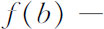
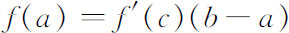
属于拉格朗日（1797）。后来它被用来推导泰勒定理，就像在近代书中那样。(50) Opuscules mathématiques，5，1768，183．
(51) 第171-182页。
(52) 1810-1819，3 vols．；Vol．1，p．4．